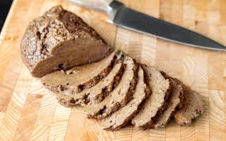

Seitan Recipe

Delicious Vegan Meat Option
Seitan is a hearty, protein-rich meat alternative made primarily from
vital wheat gluten, prized for its chewy, satisfying texture. To prepare
it, vital wheat gluten is mixed with flavorful ingredients like
nutritional yeast, garlic powder, soy sauce, and vegetable broth to form a
firm dough. The dough is kneaded briefly to develop its signature texture,
then shaped and gently simmered or steamed. During cooking, seitan absorbs
the surrounding flavors, making it an excellent base for a wide range of
savory dishes.
Once cooked, seitan can be sliced, marinated, grilled, sautéed, or baked
depending on the recipe. Its neutral flavor and dense bite make it
especially versatile, working well in stir-fries, sandwiches, stews, or as
a plant-based substitute in traditionally meat-centered meals. When
seasoned well, seitan delivers a rich, umami depth that appeals to both
vegetarians and meat-eaters alike.
Ingredients
- Dry Mix
- 1.5 cups Vital Wheat Gluten
- 1 tsp Smoked Paprika
- 1/2 tsp Black Pepper
- Wet Mix
- 1 can Chickpeas (including the liquid/aquafaba)
- 3 tbsp Extra Virgin Olive Oil
- 1.5 tsp Marmite/Vegemite
- 1 tbsp Balsamic Vinegar
- 1 tbsp Soy Sauce
Steps
-
In a large mixing bowl, combine the vital wheat gluten, smoked paprika,
and black pepper. Stir well so the dry ingredients are evenly
distributed.
-
Add the chickpeas and their liquid (aquafaba) to a blender or food
processor. Blend until completely smooth, then mix in the olive oil,
Marmite or Vegemite, balsamic vinegar, and soy sauce until fully
combined.
-
Pour the wet mixture into the bowl with the dry ingredients. Stir with a
spoon until a shaggy dough forms, then use your hands to bring it
together.
-
Knead the dough for 2–3 minutes until it becomes firm and elastic. Avoid
over-kneading, as this can make the seitan too dense.
-
Shape the dough into a log or cut it into smaller portions, depending on
how you plan to use it.
-
Cook the seitan by gently simmering or steaming it for 45–60 minutes,
turning occasionally if simmering. Once cooked, remove from heat and let
it cool before slicing or using in your recipe.
Home